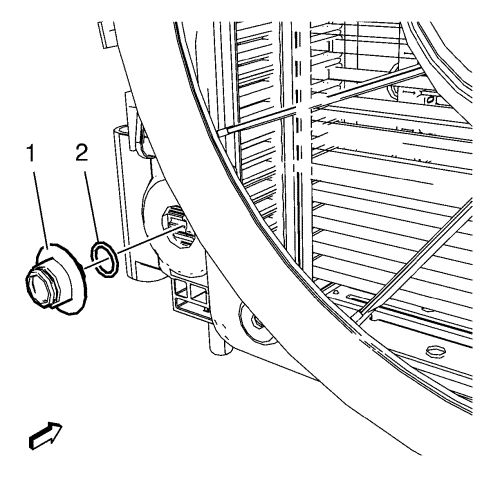

Sustitución del conector del tubo del refrigerador de aceite del cambio - Radiador
Procedimiento de desmontaje
- Vacíe el sistema de refrigeración. Consultar Drenaje y llenado del sistema de refrigeración .
- Extraiga los tubos flexibles del refrigerador del aceite del cambio de los herrajes del refrigerador de aceite del radiador. Consultar Desconexión y conexión del enchufe rápido del tubo flexible / tubería del refrigerador de aceite del cambio .

Nota: No desmonte al mismo tiempo del radiador los herrajes del refrigerador de aceite, superiores e inferiores, ya que el enfriador de aceite del cambio se caerá dentro del depósito del extremo del radiador.
- Desmonte el herraje del enfriador del aceite (1) y la junta tórica (2) del radiador.
Procedimiento de montaje
- Compruebe si hay grietas, cortes o daños en las juntas tóricas (2) nuevas. Sustituya si es necesario.
Precaución: Consulte Atención: Apriete de fijador de componente en la sección Prólogo
Nota: Es crítico que la rosca esté bien engranada. Los herrajes mal enroscados pueden quedar bien apretados, y sin embargo tener fugas.
- Monte el herraje del refrigerador de aceite (1) en el radiador.
- Monte los tubos flexibles del enfriador de aceite del cambio con los herrajes del enfriador de aceite en el radiador. Consultar Desconexión y conexión del enchufe rápido del tubo flexible / tubería del refrigerador de aceite del cambio .
- Llene el sistema de refrigeración. Consultar Drenaje y llenado del sistema de refrigeración .
- Ajuste el nivel de aceite del cambio. Consultar Comprobación del nivel y el estado del aceite del cambio .
- Compruebe si hay fugas de líquido.
| © Copyright Chevrolet. Reservados todos los derechos |